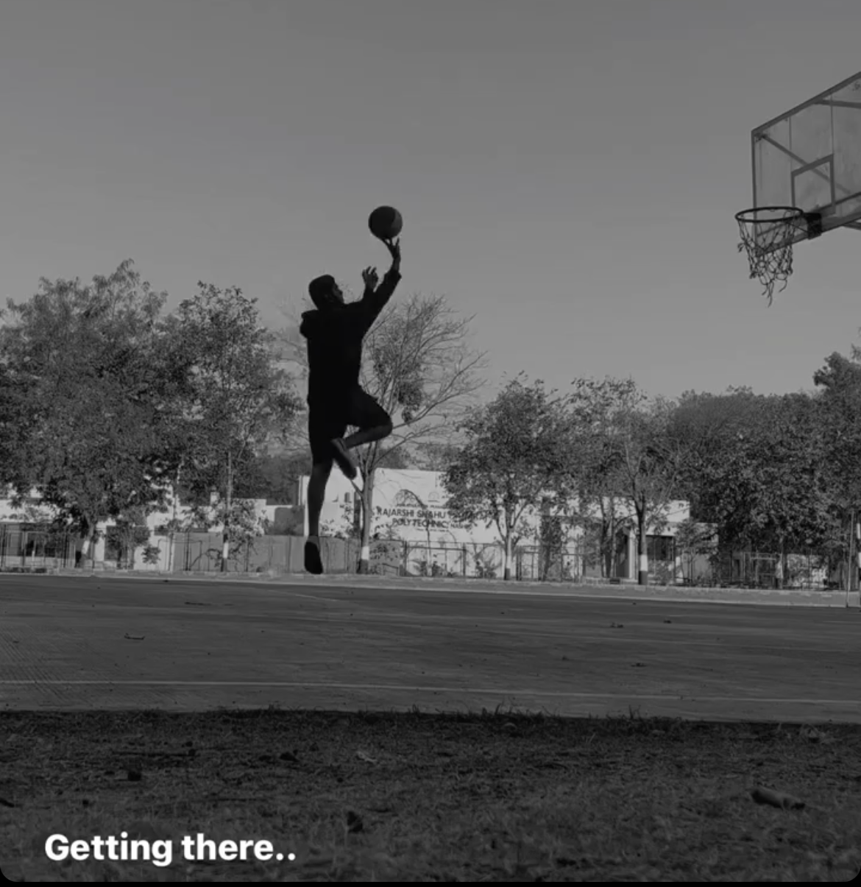

From Novice to the Court: My Journey with Basketball and Mental Peace
Sports have a unique way of weaving themselves into the fabric of our lives, and for me, basketball became the unexpected thread that added both excitement and tranquility to my college journey. As a newcomer to the sport, I found not just a physical activity but a source of mental peace and personal growth.
The Unexpected Beginning
My journey with basketball commenced during my freshman year in college. Growing up, sports were never a prominent part of my life, and the basketball court seemed like an alien terrain. However, a spontaneous decision to join a pickup game with friends marked the beginning of a transformative adventure.
Learning the Ropes
As a beginner, the learning curve was steep. Dribbling, shooting, and understanding the rules seemed like an intricate puzzle. Yet, each missed shot and every stumble on the court became a lesson. I attended casual games, practiced after classes, and slowly began to feel a connection with the game and the community surrounding it.
The Community Connection
One of the unexpected joys of embracing basketball was the sense of community it brought. The shared love for the sport created bonds that extended beyond the court. Teammates turned into friends, and victories or defeats became shared experiences. The camaraderie and support of the basketball community added a social dimension to my college life that I hadn't anticipated.
A Mindful Escape
Amidst the academic pressures and the hustle of college life, basketball emerged as a sanctuary for my mind. The rhythmic bounce of the ball, the squeak of sneakers on the court, and the focus required during a game became a form of meditation. The court transformed into a space where worries melted away, and the present moment took precedence.
Mental Peace Through Challenges
Playing basketball presented me with challenges that mirrored life off the court. The resilience developed in facing opponents translated into a mental fortitude that proved invaluable in navigating the complexities of academics and personal growth. The sport taught me to embrace failure, celebrate success, and persevere through challenges, fostering a mindset that extended far beyond the court.
Conclusion
In retrospect, my decision to pick up a basketball was a pivotal moment in my college experience. Beyond the physical activity, it became a journey of self-discovery, community building, and a source of mental peace. Basketball taught me more than a game; it became a metaphor for life—a dynamic interplay of strategy, teamwork, and personal resilience. As I continue to dribble through my college years, I am grateful for the unexpected path that led me to the court and the mental peace that it continues to provide.